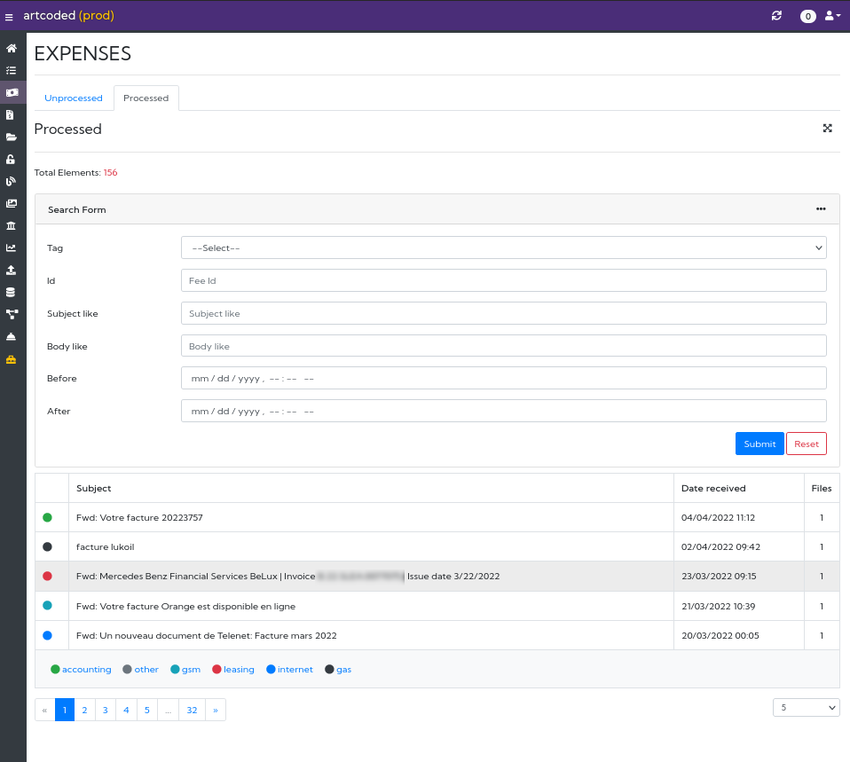
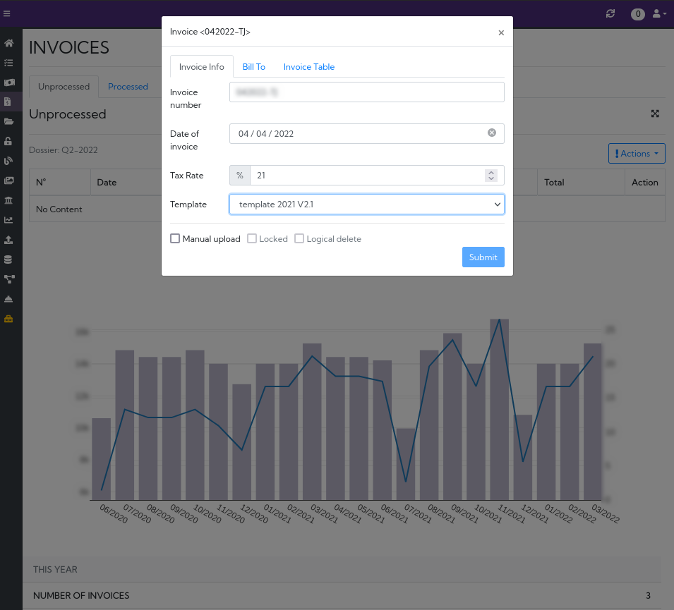
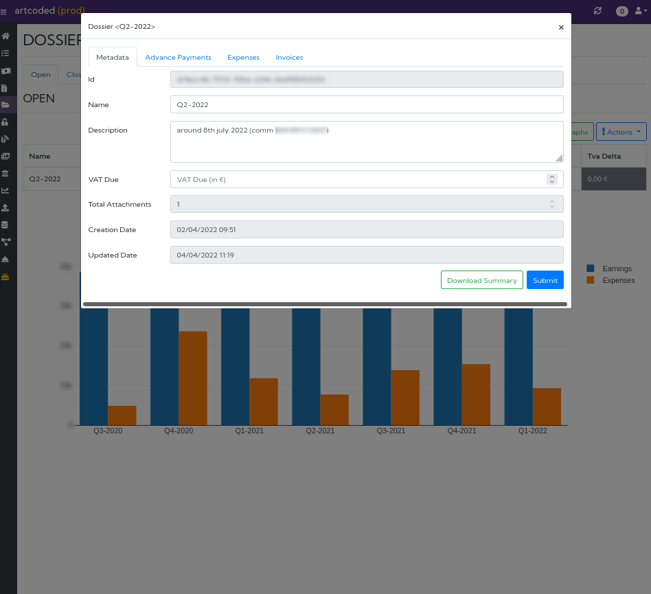

About this project
This project aims to automate as much as possible the administrative work for a freelance developer.
Tldr; everything you need to reproduce my setup can be found on github
Check out the installation guides for more details on how to do it.
Screenshots



Features & Technology stack
Various technologies are used in this project:
- Docker & Docker Compose
- Java 17
- Maven
- NodeJS 16.10
- Angular 13
- Spring boot
- Spring Cloud Gateway
- MongoDB
- ActiveMQ Artemis
- Jena & Jena TDB2
- Keycloak
- Postgres
- Greenmail
There are two UI frontends, the public website and the oauth protected backoffice. Some API's are public, while most require a valid JWT token to be called.
A non-exhaustive list of features are presented in the next pages.
Website
The public website, for an example of what it looks like, visits https://bittich.be
- Automatic SEO for blog posts & CV
- Gallery
- Contact
- Sparql endpoint (
select/ask/construct/describequeries only)
Backoffice
- Dossiers
- Add processed expenses & invoices to the ongoing quarter dossier
- Gets an overview of how much you charged and how much you spent during a quarter with plots & CSV
- Generate a zip folder with expenses / invoices in it, to send to your accountant
- Search an expense or an invoice processed in a quarter
- Expenses
- Listen to a chosen adress email where you often receive expenses (as a pdf or image attachment)
- Upload an expense manually
- Tag an expense with default hvat & vat prices (e.g "internet" )
- Process an expense (send to the active dossier)
- Search an expense by different criterias (name, description, tag, date between,...)
- Invoices
- Create an invoice with predefined parameters (Default client ) or from an existing invoice
- Add your daily rate, the way you charge (per hour / per day) etc
- Upload your own template using Freemarker & html
- Pdf generation
- Summary (total days worked this year, total charged, plots,...)
- Process an invoice (send to the active dossier)
- Documents
- Keep your administrative documents in one place (contracts,...)
- Search a document based on different criterias (title, description, date between, tag)
- Curriculum
- Keep your CV up to date (personal info, experiences, skills,...)
- Generates your CV as a PDF using a predefined template
- Change the template using Freemarker & html
- Import/Export your CV to json
- Public parts of the CV are displayed on your website, personal infos can't be accessed unless a request form is filled
- Publish the public parts of your CV to a RDF triplestore
- Tasks
- Create custom tasks to be triggered on a specific date or by cron expression
- Action tasks allows you to automate backend tasks (dump database, restore a database from a previous state, backup dossiers, timesheet generation,...)
- In app & email notification when a task is triggered
- Timesheet (to be refined)
- Generates timesheets for a specific month or for the whole year using an action task
- Fill your timesheet accurately (start/stop button)
- Generates a timesheet to PDF with your digital signature
- Gallery
- Basic Instagram like feature for your public website
- Choose a specific date to make an image visible
- Sparql Endpoint
- Insert / Query the pre-installed RDF triplestore using yasgui
- All triples uploaded will be public
- Finance
- Search over yahoo finance stocks you are interested in
- create portfolios & add stocks to it
- Plots
- Uploads
- Every files generated or uploaded in your app can be searched there
- Prospects
- Allow people to contact you thought your website without providing your email address
- Receive an in-app notification when someone tries to contact you
- Blog
- Create posts, upload images, code,... with a rich text editor
- Draft are not published
- Misc / toolbox
- Base64 Encode/Decode
- XPath / JsonPath
- Date manipulation
- RDF tools, file / text conversion from an rdf format to another, shacl validation
Installation
Prerequisites
You need at least git, docker and docker compose installed on your machine to run the whole stack.
Additionally, if you want to develop in one of the components, you will need to have installed:
- JDK 17+
- NodeJs 16.10+
- Angular cli 13+
It has been tested on linux, mac and windows, although on windows you might have to adapt some of the scripts.
There are different ways of running the stack, either locally (for e.g testing, development), or for production.
Testing, frontend development
If you just want to contribute in one of the frontends, or simply testing it without having to compile the backends, follow these steps:
Full-stack development
If you'd like to contribute in both backend and frontend, follow these steps:
Production
Deployment to production is described here:
Testing, Frontend development
Clone the following repository
git clone https://github.com/openartcoded/app-docker.git
Go to the directory
cd app-docker
Copy the .env file
cp .env.dev.example .env
For windows users, you will need to change the content of the file with:
COMPOSE_FILE=docker-compose.yml;docker-compose.dev.yml
Once done, up the stack:
docker compose up -d
In the terminal, run:
docker exec -it app-docker-keycloak-1 /opt/keycloak/bin/kc.sh import \
--file /tmp/import/artcoded-realm.json
For Windows users
docker exec -it app-docker-keycloak-1 /opt/keycloak/bin/kc.sh import --file /tmp/import/artcoded-realm.json
Add the following into your /etc/hosts
127.0.1.1 auth.somehost.org
127.0.1.1 somehost.org
127.0.1.1 backoffice.somehost.org
127.0.1.1 mail.somehost.org
Open a private browsing window and visit BackOffice
Default credentials:
username: nordine
password: 1234
If you get multiple warnings from your browser when opening the link, this is normal. Certificates are self-signed (only local)
Expenses & Reminder Tasks features
Expenses management & reminder tasks use email to receive expenses from a known email address (in the case of expenses), and send email in case of a reminder task. To test both features, follow these instructions:
-
On the top-right of
https://backoffice.somehost.org, click on "Personal Info" then "Contact/Bank" and change the email address tonoreply@somehost.com -
Open a new tab & Go to
https://mail.somehost.org. You can login withusername: noreply@somehost.com , password: noreply -
Send an email with an attachment (pdf or image) to
fee@somehost.com=> after a few seconds you should see a notification coming in onhttps://backoffice.somehost.org -
Create a new reminder task. Choose "Send Mail". Once the task is triggered, go back to
https://mail.somehost.organd login, you should see an email with the reminder.
Contribute to the frontend of the public website
Clone the following repo:
git clone https://github.com/openartcoded/website.git
Go to the directory
cd website
Run npm install
npm i
Run ng serve
ng serve
Visit http://localhost:4200
Contribute to the frontend of the backoffice
Clone the following repository
git clone https://github.com/openartcoded/backoffice.git
Go to the directory
cd backoffice
Run npm install
npm i
Run ng serve
ng serve
Visit http://localhost:4200
Full-stack development
Clone the following repo:
git clone git@github.com:openartcoded/monorepo.git
You need a valid SSH public key linked to your github account
If it's the first time that you clone the repo, you then need to run within the cloned folder:
git submodule update --init --recursive --remote
Next time you want to update all repo, run the following command:
git submodule update --recursive --remote
Go to:
cd app-docker/
Copy the .env file:
cp .env.monorepo.example .env
For windows users, you will need to change the content of the file with:
COMPOSE_FILE=docker-compose.yml;docker-compose.monorepo.yml
Build the stack:
docker compose build
Once done, up the stack:
docker compose up -d
In the terminal, run:
docker exec -it app-docker-keycloak-1 /opt/keycloak/bin/kc.sh import \
--file /tmp/import/artcoded-realm.json
For Windows users
docker exec -it app-docker-keycloak-1 /opt/keycloak/bin/kc.sh import --file /tmp/import/artcoded-realm.json
Add the following into your /etc/hosts
127.0.1.1 auth.somehost.org
127.0.1.1 somehost.org
127.0.1.1 backoffice.somehost.org
127.0.1.1 mail.somehost.org
Open a private browsing window and visit BackOffice
Default credentials:
username: nordine
password: 1234
If you get multiple warnings from your browser when opening the link, this is normal. Certificates are self-signed (only local)
Expenses & Reminder Tasks features
Expenses management & reminder tasks use email to receive expenses from a known email address (in the case of expenses), and send email in case of a reminder task. To test both features, follow these instructions:
-
On the top-right of
https://backoffice.somehost.org, click on "Personal Info" then "Contact/Bank" and change the email address tonoreply@somehost.com -
Open a new tab & Go to
https://mail.somehost.org. You can login withusername: noreply@somehost.com , password: noreply -
Send an email with an attachment (pdf or image) to
fee@somehost.com=> after a few seconds you should see a notification coming in onhttps://backoffice.somehost.org -
Create a new reminder task. Choose "Send Mail". Once the task is triggered, go back to
https://mail.somehost.organd login, you should see an email with the reminder.
Using in production
This is not an exhaustive step-by-step guide on how you might install it into production.
It should be fairly easy if you look a little bit to the code & config properties that you can override.
You need a valid domain, and map your server IP to these domains (CNAME A):
<your-domain>.com
www.<your-domain>.com
auth.<your-domain>.com
backoffice.<your-domain>.com
cube.<your-domain>.com
Clone the following repo on your server:
git clone https://github.com/openartcoded/app-docker.git
Checkout the latest stable-ish release, for example:
git checkout v2022.1.0
Copy the docker-compose.override.example.yml file:
cp docker-compose.override.example.yml docker-compose.override.yml
Open docker-compose.override.yml with your favorite editor and changes the following properties:
| Property | Example | Description |
|---|---|---|
| MONGO_INITDB_ROOT_USERNAME | mongo | username for the mongo database |
| MONGO_INITDB_ROOT_PASSWORD | mongo | password for the mongo database |
| CAMEL_MAIL_IMAP_USERNAME | expense@your-domain.com | Email account that will receive expenses |
| CAMEL_MAIL_IMAP_PASSWORD | secret_password | Password of the expense email address |
| MAIL_SENDER_USERNAME | noreply@your-domain.com | Email account that will send email |
| MAIL_SENDER_PASSWORD | secret_password | Email account pwd that will send email |
| ARTEMIS_PASSWORD | secret_password | Artemis password |
| POSTGRES_PASSWORD | secret_password | Postgres password for keycloak |
| DRIVE_APPLICATION_NAME | yourdomain | Google drive application's name |
| KEYCLOAK_HOSTNAME | auth.somehost.org | Keycloak's hostname |
If you're familiar with docker secrets, it is a better way of doing this
Change all network aliases with your domain:
keycloak:
networks:
artcoded:
aliases:
- auth.your-domain.com
roundcube:
image: roundcube/roundcubemail:latest
networks:
artcoded:
aliases:
- cube.your-domain.com
...
Modify your gateways based on config/gateway-dev.yml
Google Drive
In order to send your backups into google drive, you need to create an application : https://developers.google.com/drive
This is an optional feature, for now the services using it can be commented.
Https proxy
You can use the same configuration as me, simply put your certificates at the right places and adapt the configuration accordingly:
git clone https://github.com/openartcoded/proxy-nginx
Keycloak
You have to generate your own realm, users & roles. Go to https://auth.your-domain.com to proceed.
You might have to uncomment : #KEYCLOAK_USER: KEYCLOAK_USER
#KEYCLOAK_PASSWORD: KEYCLOAK_PASSWORD
Prometheus & Grafana
You might have to change the userin docker-composer.override.yml if it's not 1000.
For prometheus, you probably need to create a service account & a role "ROLE_PROMETHEUS" on keycloak (see config/prometheus_dev.yml for an example of prometheus config)
Events
You can subscribe to the artemis topic backend-event (that name can be overrided with property EVENT_TOPIC_PUBLISH ) in order to
consume events produced by the main monolith.
Depending on the protocol you choose to connect to artemis, you may have the ability to know what's the type of the event received
using the header EventType. This can be handy to ease filtering on the events you're not interested in.
In order to be able to download the different attachments, you must create a new service account on keycloak with role SERVICE_ACCOUNT_DOWNLOAD.
From your docker container, you can then make api calls to http://api-backend/api/download using your oauth secret key.
ExpenseReceived
An expense has been either manually uploaded or received from mail.
Example
{
"expenseId":"75e76933-0763-4ea2-aa60-112abdc35607",
"name":"facture telenet avril 2022",
"uploadIds":[
"626d1bddeb0053093002af04"
],
"version":"V1",
"timestamp":1651317725451,
"eventName":"ExpenseReceived"
}
ExpenseLabelUpdated
Label for expense has been updated.
Example
{
"expenseId":"75e76933-0763-4ea2-aa60-112abdc35607",
"label":"GAS",
"version":"V1",
"priceHVat":21.3,
"vat":12.4,
"timestamp":1651318614557,
"eventName":"ExpenseLabelUpdated"
}
ExpensePriceUpdated
Expense's price has been updated.
Example
{
"expenseId":"75e76933-0763-4ea2-aa60-112abdc35607",
"priceHVat":21.3,
"vat":12.4,
"version":"V1",
"timestamp":1651318875738,
"eventName":"ExpensePriceUpdated"
}
ExpenseRemoved
When an expense is deleted from the database. Attachments are also deleted, thus we share again the list of upload ids so you can synchronize easier.
Example
{
"expenseId":"4ff2f988-7c0a-424f-b988-45d6b9f8c6d4",
"uploadIds":[
"6260f93eb6fe2120e0d8d960"
],
"version":"V1",
"timestamp":1651319378888,
"eventName":"ExpenseRemoved"
}
ExpenseAttachmentRemoved
When an attachment is removed from an expense. E.g when forwarding an email with attachment, you may also forward some jpeg related to the signature of the sender. You don't want this in your db.
Example
{
"expenseId":"2ea6d52f-4f90-4e8c-b6c2-91fc715ec37b",
"uploadId":"626d2322eb0053093002af07",
"version":"V1",
"timestamp":1651319597558,
"eventName":"ExpenseAttachmentRemoved"
}
InvoiceGenerated
New invoice generated.
Example
{
"invoiceId":"a0f413ed-d7c7-4d03-8f4c-3af75a9a407d",
"uploadId":"626d2537eb0053093002af0f",
"manualUpload":false,
"subTotal":17850.00,
"taxes":3748.50,
"invoiceNumber":"042022-WO",
"dateOfInvoice":1651276800000,
"dueDate":1653861600000,
"version":"V1",
"timestamp":1651320119631,
"eventName":"InvoiceGenerated"
}
InvoiceRemoved
Invoice deleted. It can be marked either a logical delete (invoice can be restored), or a hard delete (invoice is completely deleted)
Example
{
"invoiceId":"f1688ed4-130f-4486-97af-d903e1bbf990",
"uploadId":"626d2537eb0053093002af0f",
"logicalDelete":true,
"version":"V1",
"timestamp":1651320225861,
"eventName":"InvoiceRemoved"
}
InvoiceRestored
Invoice restored.
Example
{
"invoiceId":"f1688ed4-130f-4486-97af-d903e1bbf990",
"uploadId":"62542bd52f5b1775103143a1",
"version":"V1",
"timestamp":1651320353569,
"eventName":"InvoiceRestored"
}
DossierCreated
New dossier created.
Example
{
"dossierId":"a24e831f-8adb-4aad-9b5a-59818751d92f",
"name":"Q2-2022",
"description":"pay your taxes before xxx",
"version":"V1",
"timestamp":1651319048150,
"tvaDue":null,
"eventName":"DossierCreated"
}
ExpensesAddedToDossier
When expenses are added to the active dossier.
Example
{
"dossierId":"a24e831f-8adb-4aad-9b5a-59818751d92f",
"expenseIds":[
"3fb1738f-6dd3-4c98-a02c-2a810ece40e9",
"75e76933-0763-4ea2-aa60-112abdc35607"
],
"version":"V1",
"timestamp":1651319137349,
"eventName":"ExpensesAddedToDossier"
}
ExpenseRemovedFromDossier
When an expense is removed from the active dossier. It goes back to the list of unprocessed expenses.
Example
{
"dossierId":"a24e831f-8adb-4aad-9b5a-59818751d92f",
"expenseId":"3fb1738f-6dd3-4c98-a02c-2a810ece40e9",
"version":"V1",
"timestamp":1651319817784,
"eventName":"ExpenseRemovedFromDossier"
}
InvoiceAddedToDossier
When an invoice is added to the active dossier.
Example
{
"dossierId":"a24e831f-8adb-4aad-9b5a-59818751d92f",
"invoiceId":"a0f413ed-d7c7-4d03-8f4c-3af75a9a407d",
"version":"V1",
"timestamp":1651320564289,
"eventName":"InvoiceAddedToDossier"
}
InvoiceRemovedFromDossier
When an invoice is removed from the active dossier. It goes back to the unprocessed list of invoices
Example
{
"dossierId":"a24e831f-8adb-4aad-9b5a-59818751d92f",
"invoiceId":"a0f413ed-d7c7-4d03-8f4c-3af75a9a407d",
"version":"V1",
"timestamp":1651320793125,
"eventName":"InvoiceRemovedFromDossier"
}
DossierClosed
When the dossier is closed and the zip file is generated. Zip file can be downloaded by using the uploadId.
Example
{
"dossierId":"a24e831f-8adb-4aad-9b5a-59818751d92f",
"uploadId":"626d2888eb0053093002af12",
"name":"Q2-2022",
"version":"V1",
"timestamp":1651320968785,
"eventName":"DossierClosed"
}
DossierDeleted
Active dossier deleted. This can only happen if there are no expenses & no invoices in the active dossier.
Example
{
"dossierId":"5954c7a6-a30e-4c4d-b24f-b6570c638da8",
"version":"V1",
"timestamp":1651321094592,
"eventName":"DossierDeleted"
}
DossierUpdated
Dossier updated.
Example
{
"dossierId":"5fdc6362-970a-4812-a1f9-b93e35c3fa96",
"name":"AZ-32",
"description":"I changed smth",
"tvaDue":null,
"version":"V1",
"timestamp":1651321322408,
"eventName":"DossierUpdated"
}
DossierRecallForModification
When the dossier is already closed but you received from your accountant how much VAT you have to pay .
Example
{
"dossierId":"5fdc6362-970a-4812-a1f9-b93e35c3fa96",
"tvaDue":7893.12,
"version":"V1",
"timestamp":1651321322408,
"eventName":"DossierRecallForModification"
}